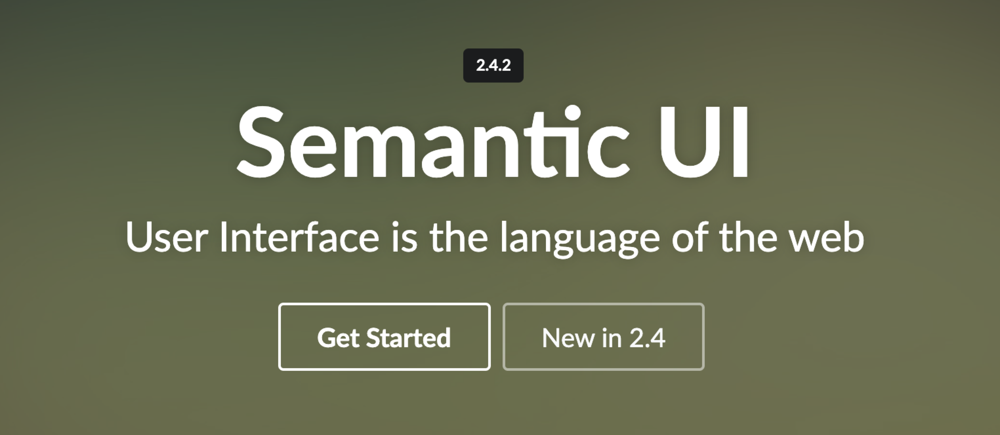

Content
This page will introduce two frameworks which are Semantic UI and
Flask based on their popularity, strengths, weakness, and which developers mostly use it
and for what kind of websites
Part 1: Frameworks
Frontend: Semantic UI

Introduction
Semantic UI is one of the most popular front-end development framework powered by LESS and jQuery.
And it is a development framework that helps create beautiful, responsive layouts using human-friendly HTML.
Popularity
46,835 starts on GitHub
Strengths
Customisation: In Semantic UI you have more options for the elements.
Semantic solutions: Diversity of code languages makes it easier to grasp fot beignners.
Convenient: Semantic UI is very well documented, with lots of examples to follow and use.
Design: Semantic UI has a beautiful and modern design, which makes it great for a range of different developers.
Weaknesses
Complex: Semantic UI framework is quite complicated, so the installation process is way more complex than other front-end frameworks
JavaScript customization: Since many features in Semantic UI use JavaScript customization solutions,
so you may struggle with the framework if you are not familiar with JavaScript.
Users and Purpose
The extremely rich features make Semantic UI satisfied for most web development requirements.
It is the best choice for beginners and those who want a lightweight, nimble framework.
Also, some companies' web developers use it for a more beautiful design of their websites or applications,
such as Snapchat, Sport Clips Inc, and Vogue Shop.
Backend: Flask
Popularity
Most
Strengths
Used python with allows for easy minipulation of json information form formatiing apis
Weaknesses
will not wrk on all servers